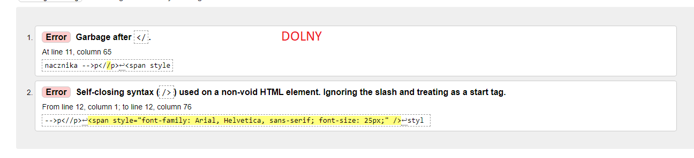
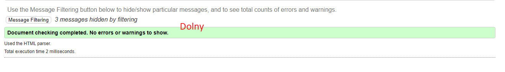

styl wpisany wielkosc 40 pikseli
styl wpisany wieloscia standardowa z uzyciem znacznika -- >p
styl wpisany wielkosc 25 pikseli
styl wpisany wieloscia standardowa--> span
Walidacja - Program (może być aplikacja Web, czyli strona WWW) sprawdzający poprawność
dokumentu o określonej składni, np. walidator kodu HTML, walidator kodu CSS. Pomyślne
przejście walidacji oznacza zwykle, że kod został napisany zgodnie z gramatyką (składnią)
danego języka. Walidatory potrafią, wskazać miejsce błędu oraz podać przyczynę
błędu→mogą podawać numer błędu
Link do walidatora

